Contents
1) Plotting Continuous Time Signals
subplot(3,1,1);
t = 0:2*pi; plot(t,sin(t));
subplot(3,1,2);
t = 0:0.2:2*pi; plot(t,sin(t));
subplot(3,1,3);
t = 0:0.02:2*pi; plot(t,sin(t));
t = 0:0.02:2*pi;
figure(1);
clf;
plot(t,sin(t),'r');
title("My Favorite Function");
xlabel("t (Seconds)");
ylabel("y(t)");
axis([0 2*pi -1.2 1.2]);
figure(2);
clf;
subplot(3,1,1);
t = 0:0.2:2*pi; plot(t,sin(t),t,sin(2*t))
subplot(3,1,2);
t2 = 0:0.2:2*pi; plot(t,sin(t),'.');
subplot(3,1,3);
t = 0:0.2:2*pi; plot(t,sin(t),t,sin(t),'r.');
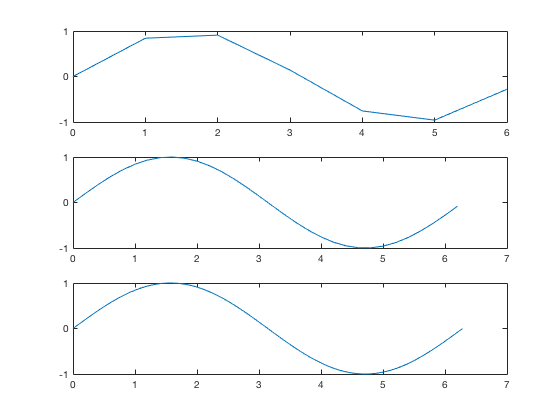 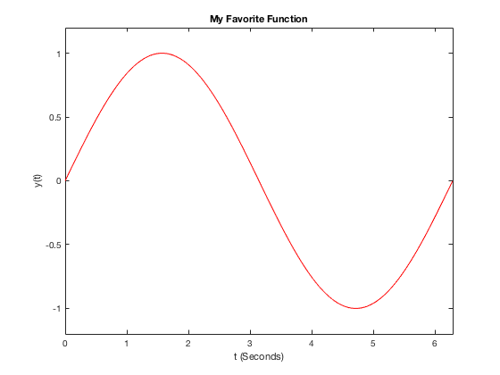 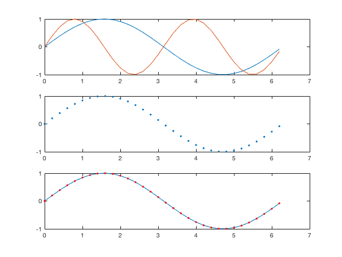
2) Plotting Discrete Time Signals
n = -10:10;
f = (n >= 0);
figure(1);
clf;
stem (n,f);
step_f = @(n, t) n >= t;
delta_f = @(n,t) n == t;
ramp_f = @(n,t) (n-t).*(n >= t);
figure(2);
clf;
f = step_f(n,0) - step_f(n,4);
stem(n, f);
axis([-10 10 0 2]);
figure(3);
clf;
g = ramp_f(n,0) - 2*ramp_f(n,4) + ramp_f(n,8);
stem(n,g);
axis([-10 10 0 5]);
figure(4);
clf;
x = delta_f(n,0) - 2*delta_f(n,4);
stem(n,x);
axis([-5 5 -3 3]);
figure(5);
clf;
y = (0.9.^n) .* ( step_f(n,0) - step_f(n,20) );
stem(n,y);
axis([-5 15 0 2]);
figure(6);
clf;
v = cos(0.12*pi*n) .* step_f(n,0);
stem(n,v);
axis([-pi 4*pi -2 2]);
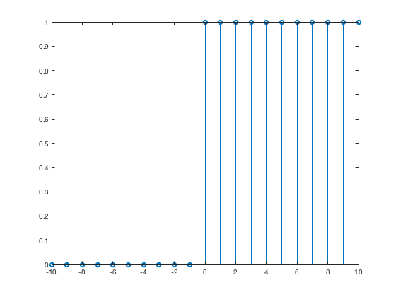 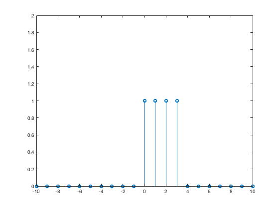 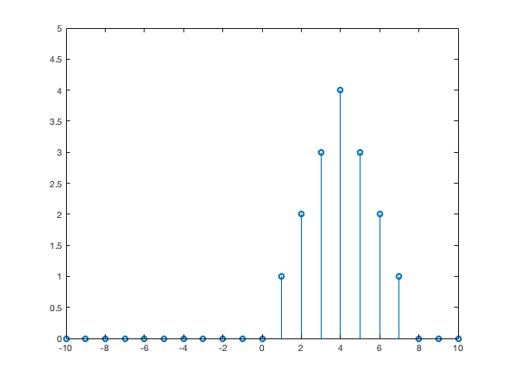 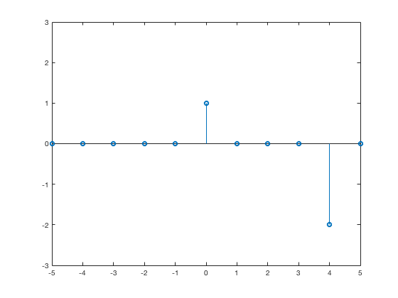 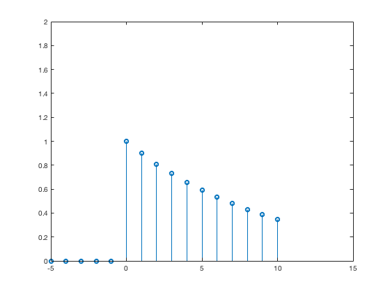 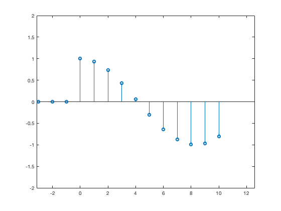
3) The conv Command
n = -10:10;
step_f = @(n, t) n >= t;
delta_f = @(n,t) n == t;
ramp_f = @(n,t) (n-t).*(n >= t);
f = step_f(n,0) - step_f(n,4);
N_f = length(f);
g = ramp_f(n,0) - 2*ramp_f(n,4) + ramp_f(n,8);
N_g = length(g);
figure(1);
clf;
subplot(3,2,1);
ff = conv(f,f);
N_ff = 2*N_f - 1;
stem(-1*((N_ff-1)/2):((N_ff-1)/2), ff);
title("ff");
xlabel("n");
ylabel("ff(n)");
axis([-10 10 0 5]);
subplot(3,2,2);
stem(n,g);
title("g (compare with ff)");
xlabel("n");
ylabel("g(n)");
axis([-10 10 0 5]);
subplot(3,2,3);
fff = conv(ff,f);
N_fff = N_ff + N_f - 1;
stem(-1*((N_fff-1)/2):((N_fff-1)/2), fff);
title("fff");
xlabel("n");
ylabel("fff(n)");
axis([-5 15 0 15]);
subplot(3,2,4);
fg = conv(f,g);
N_fg = N_f + N_g - 1;
stem(-1*((N_fg-1)/2):((N_fg-1)/2), fg);
title("fg");
xlabel("n");
ylabel("fg(n)");
axis([-5 15 0 15]);
subplot(3,2,5);
gd = conv(g,delta_f(n,0));
N_gd = 2*N_g - 1;
stem(-1*((N_gd-1)/2):((N_gd-1)/2), gd);
title("g\delta");
xlabel("n");
ylabel("g\delta(n)");
axis([-5 15 0 7]);
subplot(3,2,6);
gg = conv(g,g);
N_gg = 2*N_g - 1;
stem(-1*((N_gg-1)/2):((N_gg-1)/2), gg);
title("gg");
xlabel("n");
ylabel("gg(n)");
axis([-5 15 0 50]);
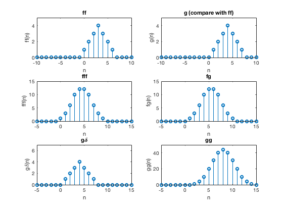
4) Plotting a Sampled Signal
x = [ 6.0, -1.3, -8.0, -11.7, -11.0, -6.0, 1.3, 8.0, 11.7, 11.0, 6.0, -1.3 ];
y = 0 : 0.3 : 0.3*(length(x)-1);
stem(y,x);
title("Sampled Signal");
xlabel("TIME (SECONDS)");
ylabel("x(t)");
set(gca,'XTick',0 : 0.3 : 0.3*(length(x)-1));
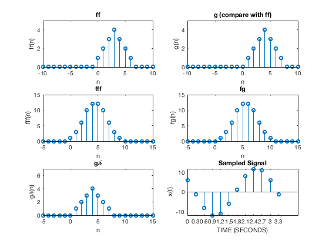
Class Notes Section 3